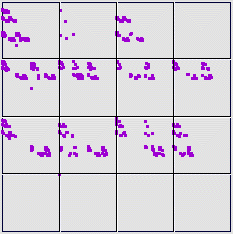

Purpose To use driven IFS to detect correlations in data
Materials Data sets
Conclusions
Driven IFS can reveal unlikely or forbidden combinations, and also combinations more likely than the average. The kind of information provided by the driven IFS depends delicately on the choice of bin boundaries, so selecting bin boundaries appropriate for the problem requires some care.